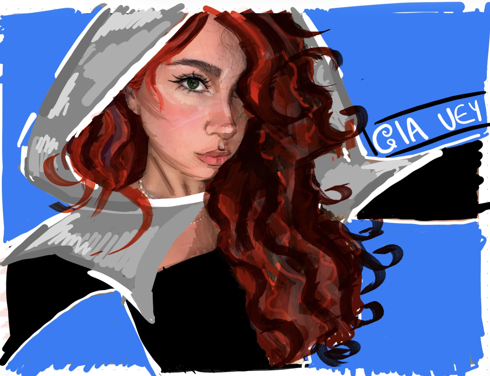

Welcome to Gia Vey’s website. Gia Vey is a fictional character created for a multimedia project. She exists between illustration and reality, with bold red hair, a graphic visual style, and a calm but powerful presence.
This page introduces her appearance through the Vector Assignment. The website explores her world, environment, personality, movement, and unusual abilities. Each page reveals a different part of who she is and where she comes from.
